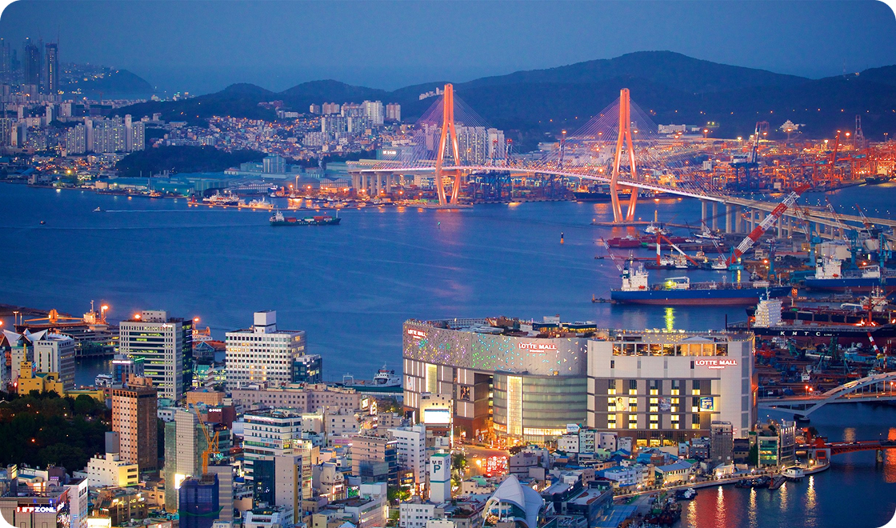

Sua próxima viagem
Conheça Busan
A Suíça possui uma cultura fortemente influenciada pelos países vizinhos, Alemanha, Itália e França, cujas populações foram contribuintes para o desenvolvimento cultural local. Cada cantão suíço possui festividades e manifestações próprias, muitas vezes derivadas de aspectos culturais locais.
-
Templo Haedong Yonggungsa
O Templo Haedong Yonggungsa é um templo budista localizado no extremo nordeste de Busan. Construído em 1376, é um dos poucos templos na Coreia construídos à beira-mar – você pode desfrutar de vistas do Mar do Leste de um lado e de belas montanhas do outro.
Bom para:

-
Templo Beomeo-sa
O Templo Beomeo-sa é um dos maiores santuários da Coreia do Sul. Ele está localizado no alto da borda leste da montanha Geumjeongsa e fica distante da agitação da cidade. O Daeungjeon Hall do templo é um exemplo bem preservado da arquitetura da Dinastia Joseon.
Bom para:

-
Parque Youngdusan
O Parque Yongdusan, localizado no centro de Busan, abriga alguns dos monumentos mais importantes da cidade. Você pode ver vistas espetaculares do topo da Torre Busan, de 120 metros de altura. O parque tem 2 museus – confira os instrumentos musicais tradicionais no Museum of World Folk Instruments e mais de 80 veleiros coreanos no Exhibition Hall of World Model Boats.
Bom para: